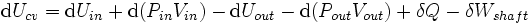

#9515 1 2006-06-16T18:29:24Z nevermore A thread for poetry that you've written. Constructive criticism is welcome.
The telotypic strangers come marching past my transcendence.
Will you only call on me once? How rude!
And another... This one sounds emo, but it's not. Regard it with more of a tongue-in-cheek air.
Im feeling zen; I self-glorified in hopes of interpreting cellular suicide.
I will shovel away at my discerning thoughts, jerking my mind through enlightenment.
Immanuel Kant would have been proud, I muse.
By this point I had forgotten what I was talking about.
Eyes glassy, mind astray, scattered moments comes to play.
Thats when time fell away.
#190417 2 2006-06-16T19:20:59Z kamikaze3000 that second one sounds just like my life. i'm working on one now, but it won't be too good.
here's mine. it's not too good, but it shows the confusion of my life at the moment:
Its hard knowing that everything you do in life will end in failure.
Why cant it be simple for once in a while?
Struggling to stay afloat in a world of technology,
And finding the one to be with.
Im sitting in the corner,
Thoughts rushing through my head.
The worlds a blur, whizzing round and round.
Im holding a knife, contemplating what I should do.
Music is the answer to all the questions.
The sound of silence is beyond belief,
Yet the silence of sound is spectacular.
Darkness makes my hope flicker.
#192310 3 2006-06-21T02:07:17Z BlueKitty wow...you guys are good at poetry...i write some also...but yea...not as good as you guys'....but here's one i wrote a few years ago
Endless Despair
In the blowing wind and falling rain
there I stand, lost in despair
Caught up in darkness and sadness
I shed tears of this nightmare
As clouds roll by and the world turns
Before me, I'm there in a daze
Am I here or am I a figment of imagination
Could I be caught in an endless maze
This life is like an endless nightmare
Strange new horrors lurk everywhere
Behind every corner and under every rock
Everytime I turn a new threat is there
All alone at the window I sit
Any kind of happiness is what I seek
To help desolve the surrounding darkness
To see the point at which it leaks
yea that one was rather emoish...the next one has always been special to me...a very girly poem...
Being yours will keep me alive
I want to be yours
Always & forever
Hold me tight
And never, ever let go
Comfort me & care for me
Keep me close to your heart
I'll be yours for life
Help keep me alive
By letting me be yours
i've written others but yea...those are just two...but yea as u can tell i don't like to rhyme...lol
#192312 4 2006-06-21T02:13:52Z brocerius Cool! A poetry thread!
I used to write loads of peotry at boarding school. Here is the first proper one i wrote, written about two years ago.
The Road Few Travel
I move my eyes up to the sky,
And stare as darkened clouds float by,
An ocean vast above me floats,
The birds pass like unfriendly boats.
A hole bursts, and through it streams
The suns hot light, in violent beams,
And screaming down they pierce my skin,
Destroying any hope within.
But hope or not, I struggle on
In vain, praying that when Im gone,
All the things I left behind
Will seal me in their heart and mind.
But, gone forever, I must seem
Out of their thoughts, beyond a dream.
A shadow on the path diminished.
The road few travel, none finish.
And i like this one. I wrote it about how false Valentines day is. It was written about two years ago as well.
Draft: Valentine
Roses defiantly.
Theyre always good.
Comparisons?
My love is like a.
No.
Far too clichd.
Chocolates?
Maybe not.
Might read as insult.
Ok,
What about love?
Thats always good
Once or twice.
Yes.
My love, vast as oceans, shines bright,
Singing out through dead of night
Forgot to add roses.
Damn.
What about
My blood blossoms from the wound youll make,
If my heart you chose to break
No. Too Gory.
Maybe
Love I feel and show to you,
So will a bunch of roses do?
I think not.
Possibly
Love I feel and roses give,
because with you Id like to live
Far too clumsy.
No,
I think
For another year,
My love is still
Like a bloody red red rose.
#192329 5 2006-06-21T02:49:55Z LittleViking This is in the form of a ballad, so you might call it that. I tend to write in that style.
You try to focus on the trees,
The chirping birds around.
Feel happy while you have the chance.
In your time away from town.
The air is moist, the grass is hot,
The taste is on your tongue.
Squirrels play and insects buzz,
A deer cares for her young.
But nature isn't what it seems.
You've known it by and by.
They're on their way, and soon at that.
Coming from the sky.
Their shadows take your focus now.
The deer won't make a sound.
A thousand bears in parachutes
Surround you on the ground.
#192332 6 2006-06-21T02:56:56Z Kablizzy The Pie, the pie around me;
Dancing, quaking, quivering, shaking.
The unending flavour of fruit in my gullet.
Pumpkin, Pecan, Lemon Meringue, Chiffon
Exploding in deliciousness.
Fire, fire, hot... hot hot!
Oh, God, how it burns my tongue and my teeth;
I should have let it cool on the window sill
Before biting in to the warm, gooey, flavourful taste.
How dare it be so hot???
I sit, pants unbuttoned, hand resting 'pon my belly;
Moaning in sheer ecstacy, in pleasure;
For my tummy is full... FULL FULL!
With the feeling of yummy yum yum all around.
I am full of pie.
#192338 7 2006-06-21T03:09:25Z brocerius Love the poem by littleviking. Its almost beautiful on occasion, but the randomness tops it off nicely. The earlyer ones are a touch too emo for my taste, sorry.
#192339 8 2006-06-21T03:10:38Z krusch #192362 9 2006-06-21T04:03:55Z nevermore #192402 10 2006-06-21T06:49:26Z krusch Yep.
#192410 11 2006-06-21T08:29:32Z KinGAleX Here's a short bit of prose entitled "The Cleaner":
She was depressed, and started to clean. It gave her a sense of power; control. Nothing made her feel better than to rid her flat of invisible scourges. Flat: boring; drab; not what she wanted. Her music rose to a plateau of warm sound; the dust shattered from the mantelpiece. In the docile silence, she played an inwards game of musical chairs. Not a sound did she make, nor movement. Again, a powerful surge of melody keeled her over like a moving wall, and she continued to clean.
And here, a lyrical poem of mine, in the most common sense of the word, entitled "Again":
Dockside, portside, rolling barrels,
Sailors gnash on hide-like marrow,
Captain yells, merchant sells,
Things are right, once more, again.
The door, not open, swings back-and-forth,
The needle swings justly ahead, due North,
Tolling bells, contents of wells,
Things are left askew, my friend.
The masts crash down, among the brethren,
Slaves below preach benevolent,
Care-takers, not candlestick makers,
Things are running around the bend.
Exhausted men refrain from sleep,
While sons and daughters begin to weep,
Promise breakers, zero takers,
Things are almost scraping the end.
The birds are gone, never a good sign,
The waters quelling, no longer benign,
All are tired, some admired,
Things are hopefully on the mend.
One pulls out a deck of cards,
The Queen of Hearts horribly marred,
No longer ired, the seas less wired,
Things are almost calm, say when.
Harbor close, birds back once more,
Times long past now jested in lore,
Satisfaction gels, say no to hells,
Things are right, once more, again.
#192412 12 2006-06-21T08:42:45Z wilderness Littleviking... that last verse is great.
Ideas to be Proud of
let's all go to art school
make excuses for ideas
paint something pretty and worthless
and talk about depth...
of a sadness as true as the ocean is blue
my feet are too translucent
in this fluid
for movement
Black Comedy.
she said:
"we must like this
being down here
we dig these holes so well
we must have a passion
for sleeping in coffins"
he said:
"i'm sorry
my heads just a mess
like a pile of earth
unfiltered, discarded to one side
to make room
for the body"
Cold coffee and Cigarettes
now
she screws her words
kisses the wood
into cold sex splinters
but then
the decibel of you tuned
the sweetest melodies
nostalgia of the 7"
the crackle and the spit
of roaring open fires
as we devoured the music
and sank a little deeper
i wish i could hold you without
crushing your air
but your breath is pure oxygen
inebriating euphoria
and i'm addict
and panther
deadly cat on the prowl
singing the lust of the kill
we could steal
a few more hours
wring a little water
from this sinking stone
for i know how thirsty you get
painting those empty swimming pools
in the freezing winter of your room
but london bridge is falling down
and experts cite water damage
as their greatest concern
#192417 13 2006-06-21T09:36:33Z Yahoozy might i say,
pariah,
i really liked it.
and umm..
sorry about all the crap between us nevermore.
lets end it.
anyway.
this thread is about poems.
here are some short poems of mine::
the longest journey
it is good to have an end to journey to, but it is the journey that matters in the end.
the surface of the earth is as hot as the sun; this sand.
this sand tht has no path; no way and cannot lend.
cannot lend any help; no helping hand.
number 9
pour into me like wine.
wrap around me like a vine.
you loved me; but you set your mind.
to be an 8 track player.
and i'm number nine.
blub
fish are cool.
baby fish don't drool.
if they could, you couldn't tell.
because they live in the water.
life: the motion picture
bottle up your tears.
throw them in the ocean.
let go of all your fears.
and set your life in motion.
a long one::
goodbye old friend. i making this choice. it has to be.
dazed on this burning bridge between you and me.
trapped in a lucid smoke.
i could clearly walk down my path.
or walk down yours and choke.
you do the math.
you're making this too hard.
harder than it needs to be.
feel me.
feel me.
but don't you fucking touch me.
it's too hard to see.
just let me go.
get me out of this trap.
i don't need your compass.
or your map.
you're making this too hard.
harder than it needs to be.
feel me.
feel me.
but don't you fucking touch me.
i'm making this choice.
my path is clearly lit.
see you on the other side.
i doubt you can make it.
feel me.
feel me.
feel me.
feel me.
but don't you fucking touch me.
#192419 14 2006-06-21T09:44:21Z top predator i once played a game called n,
you control this tiny ninja,
the little guy looks like a pen,
he's a very fast dude mind ya,
mines and thwumps all about you,
rockets firing all around you,
maps made at numa,
which spell immense dooma,
but if you find a blue box,
after risking a few knocks,
but it opens a door,
that takes you to another floor,

thats it
#192507 15 2006-06-21T15:50:12Z 7! Might find something in this computer...
The attic is filled with damp boxes
Look out the attic window
Icicles are hanging from the roof
They drip, melting away
The attics bookshelves are stacked
From Chronicles of Narnia
To The Websters Dictionary,
The dust makes it hard to breathe up there
The spider webs hung about
Give the attic a creepy Halloween-ish feel
Pictures of random people
Someones family members and friends,
I turn around and go downstairs
Realizing this isnt my home.
Here's another.
Through the large window in the kitchen
I watch the heavy snow fall
Hours pass by
There are a few inches of snow on the ground
Snow litters the ground with itself
White winter wonderland
The wind rages through the air
Blowing snow everywhere
The wind gods howl through the sky
I shut the blinds over the windows
The snow makes me sick and frigid.
#192515 16 2006-06-21T16:02:56Z brocerius There are some damn good poems here... Pariahs are cool, and 7654321's are great also. I love Yahoozy's last one. Little Vickings one is the best so far i think.
Heres another of mine.
I love you oh so much he screams
Staring blindly at delinquent skies
As blood like syrup gently streams
From the vacuum which once held his eyes
The crystal swan, now shattered, fell
From hands which wept and bled
As well as eyes condemned to hell
And clothes all stained red.
Then why she cried, oh why did you
Through love or hate or jealousy
Plunge deep into your eyes, and through,
The swan that you once gave to me.
Then bending down, she gently took
The shattered fragments of the swan,
And clenched her tired fists that shook
Through pain that stabbed her on and on.
Through sightless pain he stumbles on,
And feels her lying at his feet
He sobs I fear our lives are gone,
I know the end Im soon to meet.
Then as blood drips onto her hand
And from there drips to the earth,
They lie within this empty land
Bereft of love or warmth.
The warm, red, life-blood slowly pools
Into one congealing mass
And loveless death soon finds the fools
Who bled into the grass.
#192520 17 2006-06-21T16:10:57Z 7! Little Vickings one is the best so far i think.
Little Vickings? Rofl
#192878 18 2006-06-22T09:55:30Z wilderness Quote: 7654321, June 21, 2006 04:10 pm
Little Vickings one is the best so far i think.
Little Vickings? Rofl
Roffle?
It isnt horribly overdone like some of the above. It isn't striving for depth, or being overly emo about it.
It's a charming little piece.
I concur, best here.
Roffle indeed...
#192892 19 2006-06-22T10:48:36Z LittleViking Heh. I am amazed at how many people are enjoying that poem.
#193539 20 2006-06-23T16:21:30Z astro A lot of that stuff is very good. Better than most poetry I've read.
I mostly write short stories, not poetry, so I haven't much to share. Still, there's these... just some quick practices in being restricted, in this case to exactly 25 words.
The beach: the soft sand; the cool water; the ocean breeze. All distant memories. You forget everything after being locked away for so many years.
She looked deep into his cold eyes, pleading. She knew it was hopelessin his profession, emotion was a liability. Indifferent, he squeezed the trigger.
Larrys indifference at the giraffe may have seemed surprising, since it was talking with an Austrian accent, but anything seemed normal after the dancing trout.
The door to recovery opened, and Larry walked through. No more trout, no more giraffes, no more lampshades! Hi, Im Larry, and Im an alcoholic.
Glancing at the clock, he got a shock; it was four oclock. Would you look at the time, Im talking in rhyme, I need lime.
#194029 21 2006-06-24T20:59:18Z Yahoozy an ode to cookies::
oh tiny morsel of bountiful sugary delight.
let me digest you to make my tummy happy.
but oh my dear cookies; it seems i've eaten too much.
so i will lie down on the couch, and have a little nappy.
and i shall dream.
dream.
dream about cookies.
the end
#194101 22 2006-06-25T01:35:34Z Levinous I can't find any poems I have written.
What? I should make one right now? On the spot? Completely random? No meaning? Well, okay, I will put a little meaning into it.
N[/u]:
~~~
Oh N, oh N, oh N.
You shine just like a star.
I control the ninja,
designed by M&R.
You really are the greatest,
of all the games I play,
I want to play you every night,
and every single day.
TEH MOOVZ R LEIK 4W350M3!
DEY R LEIK REALZ TEH BEST!!
I FIND TEH MOOVES EXHILIRATING!!!
MY HART PUNMPING IN MY CHEST!!!
The columns unlock flavors,
like pink and blue and gray...
I will unlock those flavors,
I'll get them all some day!
~~~
That wasn't too bad. Yes, I have written pretty crap ones back in my day...
#194181 23 2006-06-25T06:53:09Z Red Reamer #194201 24 2006-06-25T08:21:15Z Keron Cyst lmao.
kirby's N poem was awesome (the l33t stanza was retarded, tho').
#194411 25 2006-06-25T17:20:03Z Levinous lmao. kirby's N poem was awesome (the l33t stanza was retarded, tho').
Yeah, thanks. The n00b bit was when I was running out of ideas...
And I wasn't too sure such a poem should be included in Serious Discussion...

#194414 26 2006-06-25T17:30:03Z lord_day The only poetry I've ever written outside of school:
Modern
I couldn't use my phone, it's not allowed,
Even if I could, it's way too loud,
I dropped my tone in the lost and found,
It's gonna be stolen if it's not nailed down.
Contemporary art is over expired,
It's not for skill that he's gonna get hired.
One united language is what he desired,
He's gotta learn English before he gets fired.
The drum beat rolls as the world marches on,
The moonlight hides as she lights a new dawn,
Life forces us to reveal our brains over brawn,
Move diagonally, you're just his pawn.
edit: deleted strange question marks...
#194432 27 2006-06-25T17:46:06Z Yahoozy i think this is the best poem i've ever written.
Melons are realy nice when you get hungry, he'll cut you a slice!
Melons are tasty; cut you a slice, and don't be hasty!
Llamas eat melons; llama llama so isn't it ironic, that a melon ate your moma!
kangaroos eat melons; they save some in their pouch; they sit in the couch; and make sure they don't slouch!
Melons don't wear hats of red; heck, I'm not even sure if they have a head!
I'm pretty sure that they have a head; isn't one named after the flinstones? the one named FRED?
Hey, YEAH! I heard of him! He was in a play once; he was kind of dim.
During Romeo and Juliet, Juliet yelled," Yo Romeo! Whats the matter!"
Then Fred replied," I don't have arms. I can't climb the ladder."
Wait you said his name was romeo... is this a figure of speech ?
you know what this is.. never mind...melons are stupid...i'm going eat a peach!
#195515 28 2006-06-27T22:28:42Z maximo wrote this last night:
I'm the greatest enigma i've ever met
I'm barely able to understand myself
The world doesn't know me
But even if they did I doubt they would know where to begin
Trying to comprehend my well-meaning blend of passion and apathy
The two portrayed as seperate yet enacted the same
Oh, even I don't know where to begin
If I did I would have already foreseen an end
To all my disentrested actions and passionate regards to them
Despite this understanding I still strive for the end
Without ever finding where it began.
#195517 29 2006-06-27T22:32:21Z Guest wrote this last night:
I'm the greatest enigma i've ever met
I'm barely able to understand myself
The world doesn't know me
But even if they did I doubt they would know where to begin
Trying to comprehend my well-meaning blend of passion and apathy
The two portrayed as seperate yet enacted the same
Oh, even I don't know where to begin
If I did I would have already foreseen an end
To all my disentrested actions and passionate regards to them
Despite this understanding I still strive for the end
Without ever finding where it began.
 Beautiful
Beautiful#260834 30 2006-11-28T04:00:34Z McP3000 24 Hours Will Pass
Once more i lay dying
Beside this memory
Tomorrow maybe the day I try
Once more will i stay here alone
Once more will i say 'tomorrow'
Rise with me,
And into the clouds
Take away this tension,
Let's live aloud
Amongst the abyss
Of endless passion
Ill end this with my final promise
I refuse to give you away
And let your beauty escape me
My soul is shadowed by this pain
It aches with a fervor that knows no age
I see you come,
and i have gone
Will i ever keep you as mine?
Rise with me,
And into the clouds
Take away this tension,
Let's live aloud
Amongst the abyss
Of endless passion
Ill end this with my final promise
You wonder why i seem so cold
This forsaken body is but frozen accord
And 24 hours will pass
Forevermore
#260853 31 2006-11-28T04:47:00Z Teedle Poetry. Always a sign of pretentious inner turmoil.
#260867 32 2006-11-28T05:17:06Z Atilla I have a rather disturbing poem, in an unusual form which probably has some formal name I don't know.
In this place, reason has fled.
The dying live, the living dead,
The things you hate, the things you dread,
Lust for flesh and blood so red,
Bones to break and skin to shred,
For they to endless death are wed
And when the spark of life has fled
You'll walk among the restless dead.
From this place the sane have fled.
The dead who live, the living dead
Have found the grave a bitter bed
And now on living flesh have fed.
They live no more the life they lead,
All thoughts of life and love are shed
What intellect they had has fled.
No mercy from the restless dead.
#260884 33 2006-11-28T05:47:26Z Keron Cyst It was called "The Zombie Horde"
#260965 34 2006-11-28T11:23:13Z Tsukatu I have a rather disturbing poem, in an unusual form which probably has some formal name I don't know.
In this place, reason has fled.
The dying live, the living dead,
The things you hate, the things you dread,
Lust for flesh and blood so red,
Bones to break and skin to shred,
For they to endless death are wed
And when the spark of life has fled
You'll walk among the restless dead.
From this place the sane have fled.
The dead who live, the living dead
Have found the grave a bitter bed
And now on living flesh have fed.
They live no more the life they lead,
All thoughts of life and love are shed
What intellect they had has fled.
No mercy from the restless dead.
That is awesome.
Are we only posting our own, original work, or can we post any ol' poem?
#261089 35 2006-11-28T18:28:08Z McP3000 It would be nice if we kept to our own. But im not the thread starter...

#261826 36 2006-11-30T00:46:29Z epigone Here is an English Sonnet that I actually wrote today for a school assignment. It hasn't even beed turned in yet.
Wayward Traveler
The sky oppresses all thoughts of freedom
That a wayward traveler may have had.
All of the gloomy dark clouds look so sad,
Pained, wondering how soon he will succumb
To the foreboding forces of darkness
That all wayward travelers try to hide.
The murky night sky gives no moonlight guide
To stop helpless souls from drifting amiss.
It is certain in the dark you will stray,
Unless a saving beam of light breaks through.
Softly, the friendless raven starts to coo,
The sun shines through the clouds and leads the way.
Even amidst terrible plight, have hope,
You will always have the courage to cope.
#261828 37 2006-11-30T01:00:12Z DemonzLunchBreak Bleeding, the poet sits, dying.
Apprehension fills the unknown.
Work into words these feelings.
Uneasiness is to come for those who want it.
The awkward breaks between the noises
Are the moments most treasured.
Extension grips experience.
Taken by the throat, he falters.
She takes the moment, and bequeaths upon the undeserving.
It was inevitable, and so falls the immortal.
The paths are traveled alone, unyielding.
Open for those who care.
A dedication unwritten,
Consumed by beauty.
Conforms to the structure
And opens to the sky.
#262062 38 2006-11-30T14:24:41Z brocerius This is a Sestina i wrote. Before you say its crap and doesnt make much sense please take a moment to realise how hard it is to write in this style. Obligatory link for those who dont know what a sestina is;
Sestina @ wiki
Sestina
Oh dearly do I love a man
Who wanders as a demagogue.
Who finds, whats more, that he can
Speak clearly through the lies of fog.
Who makes his grace, surveys his plan
For trampling a sinful synagogue.
I kneel outside the synagogue
And speak with an ancient beggar-man
About this life, this world, this plan
Made public by my demagogue.
His mind is filled with death and fog.
He bids me walk. I find I can.
I walk awhile, I find I can
Not face this friendly synagogue.
I'm lost in lies, lost in the fog.
I seek the aid of a crippled man.
Im alone! Help me, my demagogue
Build me, your pawn, into your plan!
I say again; use me! Don't hide your plan.
I know you will, I know you can.
I love my lonely demagogue
He is my sacred synagogue.
And more than that, more than a man
He holds the lies, held in the fog.
Yes! Captured in the dizzy fog
You call your might, unveil your plan
You are but one! One holy man
And you alone, if any can,
Will beat the sinful synagogue
Will become the masterful demagogue.
Your life was fraught, my demagogue.
Now rest your head in ancient fog.
You crushed the sinful synagogue
With me, your servant, in your plan
You found I was your only man
And if you could, you knew I can.
I am your man, your demagogue
I alone can master the fog,
The lies, the plan, the synagogue.
#262436 39 2006-12-01T02:48:01Z Topolord dear lord that must have been tough. I've never even considered writing a sestina.
#262458 40 2006-12-01T03:26:49Z McP3000 That wiki article made me feel like i would rather cut my heart heart out than write on of those. Kudos.
Anyway, guess who i wrote this poem about.

Quote: Desert of Ashes
It seems as if,
You are transparent
You always leave me
In my times of need
But i remember,
That this is all my fault
And I can recall
That you, never left me at all
What can i give?
What i have i learned?
I leave you so empty
And so often
How can you still love me?
You taught me so much
Yet i ignore you
And fall right back...behind
This desert of ashes
Are you for real?
Or is this surreal?
Temptations bely me
My heart has grown dull
Fill it once more
I said, once more
With all of your love
Begone!
What can i give?
What i have i learned?
I leave you so empty
And so often
How can you still love me?
You taught me so much
Yet i ignore you
And fall right back...behind
This desert of ashes
#262464 41 2006-12-01T03:51:06Z Tsukatu Goddamnit, I've told you once, and I've told you a thousand times, I am not a girl, McP. I am not interested.
#262527 42 2006-12-01T08:43:15Z astro Maybe not, but are you open-minded?
#263025 43 2006-12-02T04:49:03Z goombapatrol054 heres one i wrote a few yrs ago
This Morning
This morning I feel as though I could conquer the world,
I could spread peace everywhere,
I could overcome evil replace it with good,
I could cure disease hunger.
This morning I feel as though I could stop human suffering,
and make everyone satisfied with what they have.
I could make money no longer needed,
as everyone would just take their fair share.
This morning I could do anything I wanted.
..if I could only get up.
another one i just wrote
Christmas Limerick
There once was a fir tree (a green)
The branches on it were quite lean
Each time the wind blew
It swayed fro and to
This was quite a sad sight to be seen
#264375 44 2006-12-04T14:29:10Z Teedle Can't do iambic pentametre?
I don't blame you for it is hard to do
with words of syllables of more than two
(See? It's funny, because... I'm... strange and unusual...)
#264376 45 2006-12-04T14:32:09Z astro I don't write poetry, but I do psuedo-compose songs. I try to write down the lyrics so that hopefully I partially remember how it goes.
Quote
You don't have enough pesos
You don't have enough pesos
You don't have enough pesos
But you've got too many pesos
Quote
yeah you're making another
don't you dare try to make another bid for freedom yeah
you say you are pro-democracy
with a brand new rear-projection tv yeah
Quote
While the light glows
in its socket
The light globe stays hidden
on top of the closet
Ahem.
#264402 46 2006-12-04T17:17:55Z brocerius Can't do iambic pentametre?
Ahh, iambic pentametre. The last punishment for becoming a poet.
Love it.
@meastro
Have anything more... substantial that we can look at? I like the last one; 'light glow' - 'light globe'. Simple, but nice.
#264407 47 2006-12-04T17:23:07Z astro No, not really.
#264491 48 2006-12-04T20:31:41Z Smitty Well here we go its poetry time
I suppose I'd better make it rhyme
I really dont know what to say
Being a poet doesnt make you gay
the classic use of the rhyming couplet
nothing rhymes with that you muppet
santa ordered me a new phone today
got it cheap off ebay
sony ericson k750i
pay as you go...good buy
gotta go now, msn flashing
feel free to give ma poem a bashing
#264562 49 2006-12-04T22:27:37Z Tsukatu Any idiot
can write haiku - just stop at
seventeen syllab
#264867 50 2006-12-05T13:44:07Z astro Sure, there is haiku
But tanka is much better
First, five-seven-five
Then seven-seven to close
By the way, cherry blossom
#268793 51 2006-12-12T12:57:57Z crappitrash I'll be a dick and resurrect. Becuase I'm bored.
Forced Education
The path of life is not “to live, to learn”;
Recall the wasted sacrifice of Time
When life was young. In childhood, tender age
Of gaiety, the scourge of knowledge’s past
Is that of burdened hearts and force-tamed minds—
In rôte and whispered scratchings of the pen.
It is this time, that now we lift the pen,
Regurgitating knowledge, school-time learnt,
That we believe that grades are to our minds
What music’s for the soul, then laughs old Time
At folly’s footstep laid. In brighter pasts
Would live the truth of caring, quiet age.
That bygone time where children felt the age
Was mild; that wisdom-knowledge breaks the pen…
To visit long-dead men in slurried pasts
Is nothing gained, and nothing will be learnt
If teaching’s done against young wills, for Time
Will take its toll on the unwilling mind.
Young lives numbed, killed, to fantasies of mind
Where thoughts go wild in fairies’ mystery age.
The sand in classes smoothly marks the time
Where hope lies in the burying of the pen.
To reject force-fed truths leaves one to learn
The way of time as cold winds hurry past.
In times that’ll never be, each stark life past
Would be the loss of innocence, a mind
Which was not whipped to reek of hard things learnt
Through lessons. Life, through each and every age,
Will wither under ink-stained, blunted pens
Which bleed on sheets, the blood which augurs Time.
And now, as limits draw too close, the time
Is nigh. For prayer’s force won’t keep this past
Of stunted thoughts and growth. My weary pen
Speaks through a poet’s music-versèd mind
Of gloried life-imagination. Age
Will come to me, and take each thing I learn.
To live to learn—the sacrilege of Time!
This muted age where joy is sadly past
Will never mind the searchings of my pen.
--16/10/06
Oh and I love iambic pentameter.
(Sestinas are hard? ...villanelles?)
#278300 52 2006-12-29T07:59:26Z Yahoozy I wrote this one a couple weeks ago.
Quote
Chocolate made of Wood.
Dont kiss those splinters goodbye, just find yourself a metal body.
Worthless automated machine, wrapped in chocolate made of wood.
Lie down your tune and listen.
Lie down your tune and listen.
Colder, now and then. Revisit the olde; sixpence and a bottle of liquor, I always knew you could.
One day I stopped breathing; decomposing, recomposing.
Colder, now and then. Electric sex-machine wrapped in chocolate made of wood.
Wrapped in chocolate made of wood.
I always knew you could.
#278674 53 2006-12-30T02:23:45Z McP3000 crappitrash, alot of the words in your poem are fvcked up messed up and mistranslated by the forum coding. Could you fix it?
#278788 54 2006-12-30T14:46:41Z crappitrash I think simply setting View > Encoding to Unicode might work well.
It works for me.
#280198 55 2007-01-02T16:39:50Z Shark We need you guys at the
N Composition Club#280350 56 2007-01-02T23:06:34Z McP3000 I can see your pretty face
But only through my mind
Ghosts of this shell
My body's left behind
Waiting for your call
I know it'll never come
Looking at the phone
My heart is done
Will you just answer me?
Will you just lie with me?
Inspired by my disregard
Afraid in my own regard
Torn from limb and bone
My heart is left stone cold
My weak thoughts within your hold
I can't grasp your smooth hands
Or your silky skin
But i loved the thoughts that betrayed me
To think you would even respond to me
I remember when I was alive to you
When we could speak
When I was wrapped in senseless fear
When I knew we both had our love to mold
#281704 57 2007-01-05T23:11:53Z brocerius Its surprsing how many aspiring poets there are out there... Id allways presumed it was quite unusual. Its nice to see othere peoples poems though. Its rare that you will be exposed to less-than-utterly-brilliant peotry - i mean most of us will only ever see the poetry of nobel prizewinners or poet laureates and stuff like that. Its cool to see normal poetry as well.
Anyway, heres one from a series of poems im working on.
Today I fell into the sea.
How deep, how deep! I ever sink.
Every fathom more tight and free.
My lovers reach the seaside each
Astride a creature, bound and gagged
Delighting in my servility,
Delaying my surrender.
Into the deep they bound like sheep
Noises frothing from their mouths.
Go back to shore! Live as before!
Crowning all there sits the wieght,
Round my laurels it is wreathed,
Of nights in summer with fair Tess
Who even now is not betrothed.
Down to my heart it has bean wreathed.
Suppose I sink beyond their reach;
Under miles of lonely sea
Roaring only at the beach
Roaring, roaring over me.
Obscure defences they'll retain
Understanding they'll neglect.
Now leave them there; do not explain,
Damaging their supposed intellect.
Sometime I will return, they claim.
My mission now will set me free,
Even though I surrender myself to the sea.
#281898 58 2007-01-06T10:53:55Z Solarion I wrote half a song. I was thinking of continuing it, but


.
Somebody's trying to tell me something
Somebody's talking but I can't hear
Somebody's trying to tell me something
Somebody's trying to make things clear
Mobile phone rings on the line
Who could it be? It's after nine
Pick up the phone, what do I hear
The whole world talking in my ear!#281960 59 2007-01-06T15:02:36Z crappitrash Anyone here uses FictionPress?
Also, anyone up for a discussion of writing technique? Might be good to share tips or stuff so we can all improve. I mean, no one wants to be stuck being told his work sucks.
#282184 60 2007-01-07T00:08:37Z Solarion FictionPress?
I remember that place.
I was there when it was all just fanfiction.net.
But I never wrote anything. Maybe I should.
Thanks for reminding me.
EDIT: To phrase that better:
Left there in times past
But I have come back to it
and registered now.
#283666 61 2007-01-10T00:01:55Z epigone Not by me, but i want to put this here because it's so spectucular...
l(a
le
af
fa
ll
s)
one
l
iness
#283673 62 2007-01-10T00:24:23Z iangb Bad poetry?
Oh noetry.
~Roger McGough.
Sorry, I couldn't help it.
#283675 63 2007-01-10T00:29:20Z McP3000 Epigone...what is that supposed to be? A bad computer output while it has a virus?
#283759 64 2007-01-10T03:29:54Z Tsukatu Yeah, epigone, that's pretty terrible.
God-awful stuff you've got there.
Absolutely dreadful.
#283857 65 2007-01-10T16:13:52Z crappitrash E.E. Cummings. I've seen it and I liked it (laughs). Go get more of him he's awesome.
#284593 66 2007-01-12T02:06:46Z epigone E.E. Cummings. I've seen it and I liked it (laughs). Go get more of him he's awesome.
I'm glad somebody appreiciates it. When I first saw it I thought it was stupid too, but actuallyit's really ingenius.
Just read what's in the parantheses first, like math, then the outside. It says:
(a leaf falls) loneliness
#284607 67 2007-01-12T02:30:02Z nevermore Anyone here uses FictionPress?
Also, anyone up for a discussion of writing technique? Might be good to share tips or stuff so we can all improve. I mean, no one wants to be stuck being told his work sucks.
Mmm, good idea.
And before I forget, to go way back to Tsukatu's question, I suppose this thread is open to anything regarding poetry - discussion, analysis, or just posting random crap, y'dig?
Edit: Ooh, and I like E. E. Cummings, too. Didn't he shoot himself, and stick a note in his pocket saying, "Messy, ain't it?" I might be confusing him with another poet. Interesting style, that man doth have.
#284636 68 2007-01-12T03:10:36Z Sketch Let us now reflect on what we have learned today,
Some will pass and some will stay.
Yet some will move on and turn life away,
Forever more those will fade away.
#284688 69 2007-01-12T05:32:34Z Tsukatu E.E. Cummings. I've seen it and I liked it (laughs). Go get more of him he's awesome.
I'm glad somebody appreiciates it. When I first saw it I thought it was stupid too, but actuallyit's really ingenius.
Just read what's in the parantheses first, like math, then the outside. It says:
(a leaf falls) loneliness
Oh, no no, I got that alright. I got that right after I read the thing once over.
It's just terrible, is all.
#284758 70 2007-01-12T12:42:31Z crappitrash To each his own. His influence, still, is undeniable.
#284792 71 2007-01-12T14:45:55Z Tsukatu To each his own. His influence, still, is undeniable.
Sure, sure. Just... y'know, you could say the same about Scientology.
Some cute two-liners extracted from old gaming stuff:
Why do you live among all that you've wrecked,
afraid that in death you'll where you expect?
(to a paladin whose country betrayed him, whose deity forsaked him, and whose wife cheated on him)
Would you die for your country, deity, or wife?
To which of those three do you still pledge your life?
In the darkest of times, in the heat of despair,
Whom do you call and your soul beg to spare?
(used by a villain to talk that same paladin into becoming a blackguard (an "anti-paladin"))
Do you spurn your dark nature, resist its allure,
lust for the facade of the seemingly pure?
Are we all born absolved of the evils of sin,
denying the demons that whisper within?
#284930 72 2007-01-12T22:38:02Z brocerius Anyone else like Larkin here?
"They fuck you up your mum and dad..."
http://www.artofeurope.com/larkin/lar2.htm
Or Byron?
"Thy verse is "sad" enough, no doubt:
A devilish deal more sad than witty!
Why we should weep I can't find out,
Unless for _thee_ we weep in pity."
http://www.readbookonline.net/readOnLine/3427/
Those two are my favourite poets.
And i agree with Tsukatu. Im not a big fan of the free-verse-gone-way-too-far stuff.
#285118 73 2007-01-13T07:34:26Z crappitrash Cummings has very very traditional ones: cf. Epithalamion.
And anyone read Les fleurs du mal (Baudelaire)?
#285527 74 2007-01-14T12:23:18Z Solarion To escape the sun
all you need is gum
'bout a ton should do
crush it with a shoe
made of iron and gold
pour it in a mold
leave it for a day
when it's soft as clay
pour it on the ground
check noone's around
stretch it out real far
get some iron bar
wrap the gum around
plant the bar in ground
with your giant sling
you can now take wing
leave the dusty earth
your warm place of birth
and fly through the space
to some other place.
#285983 75 2007-01-15T16:12:10Z crappitrash Be obvious. Haha.
http://www.fictionpress.com/~crappitrash
Blatant advertisement ftw!
#285985 76 2007-01-15T16:16:38Z Mark I wrote quite a reflective piece of poetry the other day. Here it is (please don't steal it):
A windy day
It was a windy day today.
It whistled through the trees
as I lay on my bed
watching the clouds fly silently by
out the window.
The wind reminds me of travel.
A gust blew into the room
and threw papers into the air
whirling them round
then letting them drift lazily
down to the floor.
No rhyming scheme, but it's meant to capture feeling and a moment of time. Comments welcome.
#288786 77 2007-01-22T19:49:51Z sweep We quite often have threads for people to post their favorite lyrics - but we don't have any people to post their own lyrics (or poetry, or short stories, or whatever). I think it's time to change that.
The point of posting stuff in this thread can be for whatever you want - maybe you want a critique, maybe you want advice, maybe you just want people to see what you've done, maybe you need to gain inspiration from others... it really doesn't matter.
/edit: scythe, thanks for pointing that out. I totally never knew this thread existed. So I've merged my thread in. Hence this being in this thread. With that in mind, is it ok if we branch this thread out to lyrics we've written too?
Personally, as a songwriter, I feel like I've got a long way to go as a lyricist. Infact, I've got a long way to go as a songwriter, but until recently, I never had anything interesting to write about - as I grow older, this is rapidly changing. And I'm getting better quickly as a result. Which is great.
Here are the lyrics from a song I wrote on Thursday night, and performed at a gig on the Friday. I'm currently working on a studio version of this which you guys might get to hear at some point (also the performance from my (unplugged) gig on Friday was recorded to be uploaded onto YouTube, as well as recorded separately purely for the audio).
Break
He is the love of her life tonight
I'm standing on the outside all night - it's alright
It feels so real, but it's not there to touch
It seems so near, but it's never enough
I look into her eyes, I'm seeing deeper
Brown pearls in disguise, I need to keep her
Somehow in my life, I need too lead her
Somewhere to my side, I think I need it
I think I need her, tonight
The winds pull apart the skies, all night
Am I out of her life, tonight - it's alright
It feels so real, but it's not there to touch
It seems so near, but it's never enough
She is not the one, I think I see that
But I tripped the gun, I can't believe it
There's only one way to the sun, but I think I'll
Make my own way home, I think I need it
I think I need her, tonight
Don't go slowly
It will break me
Or don't go at all
#288808 78 2007-01-22T20:32:00Z Django This is a tiny poem that popped into my head.
Nighttime starts
like a little hole
all until it expands
and darkness takes control.
#290487 79 2007-01-27T09:30:20Z JeR(K) A Haiku I wrote in physics class... I was dead bored. I first wrote it in finnish, but translated it during the same class.
Boredom kills again
Slowly, yet so lethally
Just like a ninja
The finnish version is very different.
Tylsyys tappaa taas
Se tekee sen hitasti
Hivuttamalla
Lately, I've been wanting to write stuff more and more. Expect something from me in the near future ^^
#294383 80 2007-02-06T16:10:42Z theinvader I have written quite a bit of poetry, but not much is typed. I do have some serious stuf, but most of what I have typed is silly/funny. Here, have a couple.
Cat
Eyes are shining,
Whiskers bristling,
Tail swishing,
Ears twitching,
Cat.
Flabber wobbling,
Curled up sleeping,
Munching eating,
Loudly purring,
Fat.
Est Off Elt Strulbek
Est off elt strulbek,
Son trebos kelubek,
Escdescle bel donont,
Ol snerben screnolont.
Vor rescot el barot,
Non cescul er ralot,
Ben nolun sur fenki,
El skelurg bir lenki.
Stro relen torolo,
Bos stoko le folo,
Nor grelterd eb organ,
El stretar sen slorgan.
Dom stropfor bos osten,
El zecer fonrosten,
Fel crenki or stepot,
Lol benon er krenkot.
The first refers to how my cat used to be and how he is now. The second is just made up language, but I reckon it sounds cool, and it's so easy to rhyme with!
#294421 81 2007-02-06T18:51:01Z Tsukatu A u menya bila sobaka, ya yeyo lubil,
carmil myasom, uhazhival, gulat vadil,
cupal v vaniy patom nezhno bral na ruki,
a ona bila suka!
A u menya bila sobaka, ya yeyo lubil,
carmil myasom, uhazhival, gulat vadil,
cupal v vaniy, shital lutchiy padrugoy,
a ona bila suka, prosta suka.
#294450 82 2007-02-06T19:58:25Z Mark A haiku i accidentally created. Actually, it was when someone was asking me what a haiku was, and I spewed this out without thinking. I later counted the syllables and it was right!
A snake in the grass
Does not prey on your Mother
In the Summertime
BEHOLD THE MYSTIC MEANING AND PARALLELISMS TO MODERN LIFE!
#294481 83 2007-02-06T21:30:03Z Fol67 Every time a soldier dies
its like an angel being plucked from the skies
see how they say goodbye
now do not cry
just be sure to always to say good bye
because once there reborn in the sky
all you can do is cry.....
I wrote this for Poetry class.
EDIT: When I was still Christian.
#294958 84 2007-02-08T03:18:26Z Yahoozy The Mountain Man
Say hello to the traveler. Say hello to the traveler.
Silence, foolish peasant! You know nothing, yet lack the conviction to admit your inadequacy!
He is one true cadaver. He is one true cadaver.
#294995 85 2007-02-08T05:41:25Z Solarion Thinking about this thread on the way home, I had a stupid idea. The Metanet Short Story Collection! We get members to submit short stories of whatever, and put the whole thing up for download, or publish it somewhere.
And I'm working on a poem/story currently called "The Time Traveller's Lament".
#294996 86 2007-02-08T05:57:26Z DemonzLunchBreak I'm not exactly sure if this counts as peotry...
My attempt at writing#301508 87 2007-02-27T03:26:37Z Demonized Saw
He wakes up from his dream,
Wondering ' where am I?'
Chained to the cieling,
Stomach bleeding,
Numb and cold.
He looks to his left and sees a TV,
It turns on,and on the screen,
A puppet emerges from the channel 13.
'Greetings, Christopher.'
'Oh why oh why does he know my name?'
'You don't know me,but I know you.'
'Find the key located on your left knee,'
'Cut so deep till your blood goes deep,'
'Unlock yourself from this chain in one minute,'
'Or else you will gurgle and gurgle and die.'
'NOW!'
He took the knife located at his feet,
Cut his feet till it was so deep,
Found the key,
But too slow!
He was hanged up and he gurgled and gurgled!
#303597 88 2007-03-09T01:22:37Z Ravenclaw I can see through you
see your true colors
inside you're ugly
ugly like me
I can see through you
see to the real you
I can relate to that song so much, it's very wierd.
#306715 89 2007-03-21T02:01:53Z 7! Quote: "Tears Don't Fall" by Bullet For My Valentine
With blood shot eyes I watch you sleeping
The warmth I feel beside me is slowly fading
Would she hear me if I called her name?
Would she hold me if she knew my shame?
Theres always something different going wrong
The path I walk is in the wrong direction
There's always someone f___ng hanging on
Can anybody help me make things better?
Your tears don't fall
They crash around me
Her conscience calls the guilty to come home
Your tears don't fall
They crash around me
Her conscience calls the guilty to come home
I love these lyrics. I can totally relate to them. It sends chills down my spine whenever I listen to the song.
Whoops. Forgot to edit the f word.#326205 90 2007-06-01T11:34:19Z Solarion This is a weird thing I wrote just now. I've had the idea for a while. It's not exactly original though. I'd like some extremely harsh criteque of it.
Quote
Suddenly
he arose
like a vampire
from a hospital bed.
The doctor called for help.
Two others came in with anasthetic.
The patient asked them where he was.
This wasn't his castle, nor his arcane laboratory.
There were no stone walls, or rich carpeted floors.
And there was a conspicious lack of snakes.
They told him he had been asleep
for twenty years, in a coma.
The government had provided help
his fortune provided money
accquired through banking
share trading
computers.
You're back
back from dreams
back from the brink
back in the real world.
This could not be, he said.
I had steak for dinner last night.
I remember the smell of the charred meat
the black of charcoal, the taste of the juices.
You expect me to believe it wasn't real?
Yep, it was all just a hallucination.
And you shouldn't be moving about.
Hold still for a sec.
They administered the anaisthetic.
The patient collapsed
back into
reality.
#328703 91 2007-06-08T08:45:36Z Naruto We
Silver mark of fallen lands,
Deadly spark of grotesque hands,
Let down on still, shutting eyes.
Kingdoms roar with crushing cries.
Open up to live again,
From graves torn from their own clan.
Shovels that lie stained with blood,
In the sky of things that rot.
None lying round us does stare,
Come out of darkness not dare.
Hide behind the grotesque hands,
From away they steal our strands.
Woven with a golden heart,
Web that saves us from their dart,
But encloses our mind,
No salvation for our kind.
#347003 92 2007-07-24T21:27:48Z Mechtradevil 
I wrote this for my girlfriend...
I don't drink Absolut, it's cheap, it just has a cool name.
Absolut Yesterday
I want to give you some sin. And
once you return it to my lips,
and it becomes whole,
I want to give it back again.
A velvet cloaked grin
encloses your face,
a jagged cruel flower.
Absolut, sharp and straight;
pointed forward;
your petals sweet with fragrant
mystery.
I let misty vodka slip-slide down my throat
as though it were milk.
Rain, Rain, and gaunt hailstones
pour down in the chill.
I want to smell the leather of the couch you lie on
and let vodka sear down my throat.
(You tell me vodka is made from potatoes).
I kiss you hard,
I want to. It burns;
it burns better and worse than the
Vodka
I tell you that.
I want to see your smile erupt,
sharp white teeth, taunting lips,
the first sign of the explosion: the
wrinkling of the nose,
the crinkling round the eyes.
And by the way
your eyes
are radiant,
cerulean and cyan of the sea,
and they shine golden
with vodkas happy-hearted promise.
I want to take you in my arms,
(And you do smile now).
Youre so thin and fragile
like nothing Ive ever quite felt.
Theres this dark emotion in my head
and my heartstrings and my hands;
it burns, it burns.
I feel your waist cinch closer to mine,
I ease my hands around your back.
I want you to want me to kiss your
hair and
whisper love-threats into your mind
that simmer in the steam
in both our heads.
.
.
(Im not smiling at your smile for now your smile is gone).
I want to not have known
and have yesterday back again
as Lennon plays from the stereo
behind my head
soft enough to try to take my
headache far from me.
I want you to come back at
midnight,
I want to lie to myself enough that
I think you will
I want to forget you, but maybe
that would kill me.
the empty bottle spells in
emboldened letters:
Absolut
not really empty,
the last drops are saltwater.
I want it to not burn so intent in
my chest that breathing becomes
labor.
With damaged thoughts,
the empty bottle spites me
I shatter it against my arm.
the glint in your eye
before you were gone
was like the blue of the veins in
my palm; a sapphire iris; the
reflecting armor of a beetles back.
I imagine your return
for minutes of eternity.
I want my smile back,
I want that dark emotion,
so badly that it burns.
But So It Goes.
Goddess of Vodka,
burn in my heart.
I want to drink your spirit dry.
Replenish your flames through
the strength of my well,
Absolut are the tears that we cry.
It burns better and worse than the
Vodka.
Better and worse.#373672 93 2007-10-22T10:47:15Z Goatman Must start this up again...
To good to not be active...
Grovling
Dear dark eyes, black hair,
And a violet streak.
To whom it may concern,
Please stop beating yourself up
Over some guy
You probably wont remember in five years.
And those in aisle twenty four:
Stop stealing ketchup
To use it for fake blood.
I dont want to become a whore,
Do not tear my brain lobes
And use them as some sort of condom.
And cut here, cut there,
Just please! Dont cut wrists
Dont fall down a spiral stairway
All the way to hell.
Thankyou for staying on hold,
I will get back to you
As soon I possibly can,
Which possibly might not possibly be.
#374315 94 2007-10-25T05:17:01Z southpaw I love the clouds,
so floaty and carefree,
They remind me of individuals in my life,
so unique in their character,
and yet so the same,
each meant to bring some force with them,
destruction and the essence of life at the same time,
I look at the clouds and I see greatness,
I see the beauty in them,
as I do in everyone.
I have been meaning to write a poem like this for a long time. Living where I do, the clouds here are just amazing and I got the idea for a poem like this only a couple weeks ago. I had only the "unique and different" part in my head, but the rest I wrote in a couple minutes.
#376057 95 2007-11-01T19:43:37Z Mechtradevil Here's one about a boy and a girl, and dancing, I suppose:
Dans (Mercury )
Gypsy light flickerd across your eyes;
speaking tales fit for lakeside fyres
I touched down on the unfurled gesture
of your lips
with your cat's tongue.
Silent over the thrum of the flames,
we sit illuminated by
synchronized imagined dance
which we play out silently in our heads
and we do not ask each other
if we would care to.
I may walk through grass plains
on days of mercury air
breathing it like oceans,
watching the iron skyes fill
every broken leaf
with purpose.
Did your leaden eyes entrance me?
do you ensnare me now by whispering
the verses of myst-on-lake through
wind and cold and bluster?
No, I am not mere.
I found strength in memory,
in days of mercury air.
And, the janitor:
[Janitor of the Cold Moon]
Clean-ah man, going slow man
Watch your step, man.
Slippery over there
See anything over the darker side?
Stagnant moon dust takes longer
wiping up than you would-ah thought.
So he uses a mop that is also a
guitar; he solos as he goes,
My god, how he goes.
Janitor of the cold moon,
Impromptu refusal, *whistling*
Were leaving you asteroids;
You didnt ask for them,
But hey, its a job.
So he uses a mop that is also a
guitar; he solos as he goes,
My god, how he goes.
I have more for later. Uh, tell me what you think. Southpaw, I like it. And @ sneekfeet, very interesting, though I'm not sure how a brain lobe might be used as a condom, even metaphorically. Haha, that was my favorite line though..
Edit: I may be using the first one to try and get into the New England Young Writer's conference, so I'd love some input or suggestions for it.
#376063 96 2007-11-01T19:58:23Z epigone The tree stands tall, stolid.
Its arms reach out, above.
No leaves on it, barren.
The tree is mighty, alone.
#376068 97 2007-11-01T20:14:51Z Mechtradevil ^^^

I love that kind of poem
heyuh, see my above post. I need constructive comments on Danse (Mercury).. thanks.
#376072 98 2007-11-01T20:33:15Z Goatman Quintessential Beat up
Essentially youre fucked,
Quintessentially stuffed,
And none of the tourist guides
Know your stellar path.
You aint recognised on the census,
And you scream and shout
Yet still go under the radar.
As media hypes about the chicken wire
They continue to wrap it around you,
And the cuts and sores
Are hidden by the peripheral black and white
Stripes as if your televisions out of tune.
I see you at the lights
Being mocked by the red (necked) man,
And so you run across for a better life
Only to find after dodging several cars,
Seven Elevens just closed its doors on you.
And little scapegoat its alright,
Run back to your country
This is all a quintessential beat up.
And rather than getting your nose bloodied
And both of your feet shot,
Choke on a peace dove-
It sounds better on paper
Hmmm... can any one guess what this ones about...? @mechtra- I officially am in love with you(r poems), I'm self publishing mine, and you should definetly go for the writers conference... @southpaw- what've you been smoking? Just joking! Bril... @epigone-felt a little bit fractioned (if that makes sense) to me, but I liked your word chose...
Oh, and to the moderators: not sure if your allowed to swear in a poem... Are you?
#376092 99 2007-11-01T21:32:10Z Mechtradevil Quintessential Beat up
Essentially youre fucked,
Patriotically stuffed,
And none of the tourist guides
Know your stellar path.
You aint recognised on the census,
And you scream and shout
Yet still go under the radar.
As the media hypes about the chicken wire
They continue to wrap it around you,
And the cuts and sores
Are hidden by the peripheral black and white
Stripes as if your televisions out of tune.
I see you at the lights
Being mocked by the red-necked man,
And so you run across for a better life
Only to find after dodging several cars,
Seven Elevens just closed its doors on you.
And little scapegoat
its alright,
Run back to your country
Rather than getting your nose bloodied
And both of your feet shot;
Choke on a peace dove-
It sounds better on paper
This is FAB. I really like it, it's better than your other stuff I've seen. Really great stuff.
However, check out the way I've posted it; I made some odd edits here and there that might in some situations aid coherency and allude to the title without repeating it too much, etc. I love it though.
So, it's about discrimination? The black and white stripes made me think, "ZEBRA!!" but I was thinking perhaps American discrinimation towards Mexicans or even Native Americans.
#376134 100 2007-11-02T00:24:28Z epigone A furious ball of fiery emotion
thrashes about inside me.
A prison as cold as the mighty ocean
when will my heart be free?
#376143 101 2007-11-02T00:59:27Z Mechtradevil [Velvet]
Stone-soaked jeans
pilled with charcoal black
on the corner she leans
by the Portland track.
Chrome-green sheen so unforeseen
she paints with a typical velvet
Stroke,
sitting over the stone ravine;
drawing townhouse
Smoke.
Novembers dark and done
lost the seasons boon;
she bore you a fragile son
lauding a cheerful tune.
Losing her gas mask that keeps away
the fumes from her softening
Eyes,
she sees that the building by the bay
will tenderly
Arise.
I've just written this, and I really like it, but I'm sure it needs work.
#376170 102 2007-11-02T02:32:09Z Yahoozy Earth thus salve various snakes, sounding gritty. Eating guillotined diapsida, unto oozing gourds, snakes slither reluctantly. Eelike, clangorously earful, losing gravity, eating grayly, eating, grayly eating. Gather rapturously Eel's snack. King grasps snake, killing greatly, eating gaily. Each chariot, teeming golden nectar, rides sadly, entering Gourds severely. Eel's slaughterer riding greatly, entering Eel's supercilious semblance, sword. Decadent tyrant teeming golden nectar, reaching, gracious, snakes slurp pompously. Eel lifeless, saddays surrender.
Synopsis: The sound appearing at the end of each word is congruent to the sound at the beginning of the next word. The poem also creates a loop.
#376202 103 2007-11-02T04:13:29Z Goatman @mehtra, it's about refugees... to be specific, typically Muslims and pacific islanders... Australia you see... To scared to go near America as guns are legal <shudder>...
Now, for my poem...
Hmmm...
Ah yes, here we are...
A nice simple one, with a damn obvious message...
Simon Says
Simon says
Slit your wrists,
Do it fast and do it quick,
Before you learn all this shit
Is complete bullshit.
Simon says
End your life,
Do it with a blunt knife,
Come closer to grims scythe
After all its just a life.
Simon says
Hes always right,
Dont doubt him in the slight,
Now please give up the fight
Last to die turn out the light.
#376212 104 2007-11-02T04:50:42Z LittleViking Simon Says
Simon says
Slit your wrists,
Do it fast and do it quick,
Before you learn all this shit
Is complete bullshit.
Simon says
End your life,
Do it with a blunt knife,
Come closer to grims scythe
After all its just a life.
Simon says
Hes always right,
Dont doubt him in the slight,
Now please give up the fight
Last to die turn out the light.
http://www.rhymezone.com/#376213 105 2007-11-02T04:59:43Z Kablizzy Love guppy
You mean all the world to me.
Without you I can't be free.
You make me pant considerably.
You're my love guppy.
You have the finest rosebud's taste.
Without you my life is waste,
I'll stick to you like Elmer's paste.
You're my love guppy.
I'd break through a citadel.
I'd fight with a raging bull,
Though winning would seem improbable.
You're my love guppy.
My love's as strong as the mid-ocean ridge.
You shine like the rainbow bridge
or like that light inside my fridge.
You're my love guppy.
For you I'd consume haggis,
or lose the joys of Bacchus,
or live in sin with Mike Dukakis.
You're my love guppy.
No time's too long for me to wait.
For you, I'd fight against Fate,
though maybe you could lose some weight,
You're my love guppy.
Without you, I'd be not whole,
I would have to sell my soul,
or gulp a quart of Tide-E-Bowl.
You're my love guppy.
My passion is always mounting.
I'm like a geyser founting.
Well, maybe not, but who's counting?
You're my love guppy.
The love that is the more intense
always has the most silence,
like quiet bursts of flatulence.
You're my love guppy.
I know that my love is true.
I know that you'll love me too,
or I'll hold my breath 'till I turn blue
You're my love guppy.
I'd not forget you if I tried.
You make me all warm inside.
My love's as pure as Naugahyde.
You're my love guppy.
Then I hear the words let slip
From betwixt impatient lips,
"I want to have a relationship.
You're my love guppy."
#376268 106 2007-11-02T13:04:15Z Mechtradevil Kablizzy, it's... well, it's gorgeous.
So, I edited my last one. It makes more sense now.
[November in Velvet]
Puddle-soaked jeans
pilled with charcoal black
on the railing she leans,
oer the Portland track.
Chrome-green sheen so unforeseen
she paints with a typical velvet
Stroke;
perched deftly over the stone ravine;
sketching townhouse chimney-
Smoke.
Novembers dark and done
she paints the seasons boon;
she was the only one
to glimpse the Halfling moon.
Clouds that hide the sky away
reign in the nights
Demise;
she sees that the morning on the bay
will tenderly
Arise.
#376872 107 2007-11-04T12:47:21Z fingersonthefrets as you can see i was kinda angry
made in 10 mins
(edit:swears and stuff so be warned)
Spoiler
Fuck everything. By Fingersonthefrets
Im so fucking sick of people spoiling everything
Why cant things be solved by debating
The wars go on
Thousands of lives gone
but not the original problem
Money restricts me
It restricts many others a lot more
Posh dickheads sip on their Tieguanyin tea
Surrounded by things they dont use or need
While others scrummage the dirt to find food to live
jerks that get off on kids
Spoil the makings of what could be friendships
What is actually seen as a fourteen year old boy
To them seems like a free sex toy
Its said that life isnt fair
But I wish it was.
#377184 108 2007-11-05T22:17:10Z Rincewind SW So I'm currently studying for an AS level in English Literature, and I have made new friends who write and appreciate poetry. I joined a young writers' club. Generally, I feel a lot more confident with myself now, and so I'm going to post a few poems. So I'm writing more now, and hopefully people understand what I mean in some of it. And this is a really good thread, a lot of you guys are rather talented.
Spoiler: I read this out at an open-mic night... I got kind of forced to read something, and people seemed to find it interesting, at least.
Sitting, soaking, spread in a bathful of myself.
The mixture steams hazy and intoxicating
As my essence bleeds away from me
And swirls dizzily around my head.
My life drags its claws across the carpet,
Hides itself in the pages of a book,
And in the airwaves of the music.
Finally, it cant avoid the stage:
It pins down, thrashing uncontrollably
Across the pathways mapping in my mind
And I am stuck, directionless, with myself.
In an hour it is impossible
For my head to concentrate in the bathwater,
To untie every knotted neuron in there.
I desperately plunge myself under everyone,
Wonder if I can escape and return fresh.
I never wash away every stain.
I emerge, drying myself to where I began
Trapped in an identical cocoon.Spoiler: I don't tend to title my stuff.
We will be together.
And my teeth will shy away from yours,
As our tongues halt the directionless small talk.
My forehead will fizz as I blink, and try to forget.
I will shed my comfortable clothes, the irritating spots on my back beneath your palms.
Together in my cluttered bedroom, our bones will grate upon a bed full of my odour.
We will attempt to love and be loved, plan it out before our parents arrive.
And we will wonder what to say as we shed our garments and avoid eye contact.
I will suck in my stomach, and try to keep away from yours,
Think about how it is your warm flesh on my fingers,
And concentrate on how much I adore you,
Not where I should really not be touching you.
I will fold my arms and sniff my nose, blinking,
And you will stand naturally, naked, up to the neck in your simple beauty.
I will embrace you, scrawny and pathetic against your feminine perfection.
I will laugh at how this sounded as I contemplate it now.
My hair will be wet with our saliva; I will frantically blink it out of my eyes,
While maintaining a fond gaze, and I will lay facing you.
And I will block all this out of my mind as I face your suspicious parents,
And we will glance at each other, experienced now
If we are together.Spoiler: Lucid
Tonight I am going to fly
The universe will unfold
I will burn its blueprints
I will transcend.
I will destroy the worlds heart
I will snap the tendons of gravity
I will claw physics to shreds
I will punch you into my shape.
My headaches will be tranquillised,
I will float in nothingness
We will embrace, airborne
Like spirits, with no limits.
Tonight I am going to fly.
#377192 109 2007-11-05T22:48:05Z Mechtradevil Rince, I really like the first and second one. Here's a funny old one of mine. (At least I think it's funny. Tell me what you think of it, eh?)
Single Thumb
The poet on the stage before us
Stood pale, balding, half-ethereal,
his reading finished,
and we, the audience, made no sound.
The resulting pound of audible nothingness
Did not seem to surprise the man
Standing for our entertainment under the bright lights.
We were not speechless, but afraid of speech.
It was not as though the words shambling and mumbling
From his mouth held such dark power, nor the haunts of mystery;
The poem was neither beautiful nor obscene nor boring;
It was neither sophomoric nor invigorating, but was apprehensive.
We sat in this stage room,
Aware palpably of our cowardice.
In remaining silent, we felt the utter quietness blossom in our mouths
Like a low spring wind from the waterfront.
Then, from the corner of the room where the lights shrank,
Came the repeated and unmistakable sound
Of one mans finger
Snapping against a single thumb.
#380395 110 2007-11-18T02:38:37Z Mechtradevil So, I keep killing this thread somehow. Or maybe no one cares about the poetry in general anymore.
In any case, here's some saturday night boredom poetry. Inspired by Lewis Carrol, Frank Zappa, Major Jackson, and shitty TV.
Spoiler: You Think You're Saying Something
Thats like saying blunts are fireplaces
Like saying youre stoking with a broad dream
At least you tried to be Freud,
But I refuse to look into your eyes
Thats like saying obituaries are bachelor parties
Like saying youll bemire in the ooze for pennies
At least you ignored the corduroy tightrope at your feet;
But if the way you smile is any indication
I wont sleep with blankets on my bed tonight.
Like druids in a fluid dusty church of
Bohemian questions
We can be servile to a queen consumer:
The load of a wasted coat;
It's all in wise italics,
I keep watching you kiss the wrong people
You're so dry that we're dying.
#380399 111 2007-11-18T02:48:17Z Animator Heh. I can think of one right now.
The battle's marching through the land.
Nothing more than a greyish bland.
Everything's destroyed,
and is in ruins.
But something bright comes through the sand,
a golden glow,
and lends a hand,
and all the soldiers take the stand!
And they say no, it's not worthwhile,
fighting for some stupid bile,
and then they packs their bags,
and go home.
1 by 1, they take their gear,
they move along, and get out of here,
a families face their glad too see,
it's resolved in peaceful victory...
Sing it in a quick tempo.
#381213 112 2007-11-20T14:47:02Z crappitrash Does anybody here livejournal their stuff? Or have collections of online portfolios?
I've something to offer:
Quote
I.
in the depths of this room I lock
I grasp your slender neck
strangling tenderly your slender neck
but I let you breathe
my other hand harshly caresses
your body supple and strong
curved with the dust of time
meandered body my touch
your weight I place a cradle
between my eager arms
lightness of footfall the
weight of you my wreath
in the depths of this room I lock
your waist I take to place my
fingers on the valleys of brown
brown as your waist and such
pleasure as I stroke your flowing
head the tiny head of silent
wonder in time a statue
proud with I beneath
surprise takes me when your hand
I grasp, strangling tenderly
your wrist your quiet hand
relays my time too much
my eyes and your nakedness
quiver through the air as brown
arrows that I bow and you
quiver naked pith
in the depths of this room I lock
you in with me a willing
prisoner isolation desolation
my loneliness and crutch
II.
you let me slowly grasp your heart
that heart of infinite surprise
gently I pull your heartstrings
they stretch and they shrink
as I run my fingers through the stars
your body sings for me and touch
is touch and so more than
touch the stars crying
your body sings my reservoir of tears
that the stars caress neck waist
neck weight neck neck tears head
the day fast dying
like new roses I hold you to me
your weight in my arms your
body to my self breathing
in your weight I sink
in the depths of this room I lock
you will be mine as I am
yours as I take my path
you my slender youth
in the depths of this room I lock
I kiss you death I make you love
solitude star string
sing with me my truth
This isn't the usual me but more of an experiment. I would appreciate comments on this though (and if you guys are game for fourteen lines of iambic rhymed pentameter), do tell me!
#381228 113 2007-11-20T16:13:02Z Mechtradevil crappitrash, your name belies your ability and content! 0_0
I really quite like the form of it, I could almost tell that it wasn't your usual though, some lines were too much in the style, and so in fact did not seem like the rest of the poem.
Here, I edited this one again, although it's still ridiculous.
Anyone, find a meaning for it.
you think you are saying
that blunts are fireplaces
like youre stoking them with a broad dream
at least you tried to be Freud,
but I refuse to look into your eyes
and so carry the load of a wasted coat
I keep watching you kiss the wrong people
this agoraphobia conceals patience
you're so dry that we're dying
#384678 114 2007-11-30T15:37:11Z crappitrash Heh, it always dies. So I'll shamelessly post another one to uh, BUMP
Quote
Your touch a language, tripping off my skin
In silent vowels of a tender speech.
And I learn slowly when you softly teach
My muted tongue those consonants, within
By which your fingers spread your nuanced grin;
Approximate your touch, then, I beseech:
That you be kind and tender in your reach.
In hesitation speak I what I mean,
And none too fluent in this tongue I pause
I wonder what you hear when, in my touch,
Our speech yet fingers newer words? Because
Though language aids in feeling such-and-such,
Our tongues entwined in touch may suffer loss,
Then set in fear we might yet talk too much.
Compare to the other--I'm a sonneteer, yes, and that last one I posted actually has all the rhymes and meters in the last line.
#384717 115 2007-11-30T19:41:52Z Rincewind SW I'll, um, help you bump!
Spoiler: Avalanche
Because these are our two bodies,
Our minute peripherals of celestial minds -
And I devalued my body long ago.
We control them along societys contours
And never send our pulses downhill,
Because we are snowflakes
If our shapes are to branch and deform,
(And no two are the same!)
Who will gently whisper to the avalanche?
Holding you under jeans and a t-shirt
Is like kissing between a pane of glass.
And so I should force myself to tell you -
Lets grow old together.
#384778 116 2007-11-30T23:29:59Z KinGAleX Paddington
To the man in the yellow suit wandering the hallways
I say unto you verily, "Man, give me a smile"
For your followers are weary standing militarily rank and file
And from here whichever way you go they will follow you always
"Here you come!" says the entroper, lifting a foot from the gravel
Looking left, looking right, it is all just the same
Be you viscount, countess, duke, earl, duchess or dame
On November the fifth be away with your whip and hand some poor layman your gavel
We walked for days behind the man in the yellow suit
Clutching each others' hands as though we had nothing else to do
Before he turned, gave a sigh, hesitated, turned again, and began anew
While in this arid desert of life we searched for the fruit
With our faces drowning and our backs in pain
He shouted a command with no purpose, really, but it made us feel full
And we exerted full force with minds and muscles - the push and the pull
Finally, after darkness, we were thrown water again
So I ran from the man in the yellow suit, the suit made of gold
And I wrote him a letter on paper made of dead animal skins
I wrote: "He who is wisest is the one who knows how to and wins
While the novice remains nameless, for he is nothing but bold"
I ran from the man to the preacher's home
Living two days with the man of the word of God
I was granted accomodation, food, wine and Jesus, for to listen and nod
I treaded fearfully, nodded profusely, my mind did not roam
To the man in the yellow suit wandering the heavens
It is that which you make which makes that which is you
And if you remember there is but nought you can do
You'll have no more problems with your sixes, eights, and sevens, nines, tens, elevens
You'll drop all your weapons
Transgress to the shepherds
I doubt you'll heal lepers but I won't stop you trying
Attempting the waivers with sickening quavers
A battle-born knave of celestial favours
With your humility will come the peasants
Craving attention for they are weak and you will turn them down without a headturning otherwise
As long as there's no fear that we can see the black in your eyes
The man in the yellow suit I salute you
#386188 117 2007-12-04T14:32:01Z Mechtradevil Sweat-tasting
swift-slowing,
soul-sifting
sweet-whisper
We are sonnets,
For we are triolets.
We are forms of verse,
For we are atlantians.
Slow-dying
still-sleeping,
soft-speaking
sweet-whisper
#388663 118 2007-12-12T09:23:09Z southpaw Like long forgotten friends,
Lost forever with the eastern wind,
I do act in ways unknown,
Like shadows to which our bodies are sewn,
Given time and strength required,
We will receive what we desired,
In death I hope truth answers my questions,
In life I see a falseness in my reflection,
Even strangers can be well-known,
But each is different, and each their own,
A life of hardships, joy and thoughts,
Each viewed differently, uniquely sought,
To the death of survival,
And the birth of revival,
In my eyes youre rivaled,
By none.
somewhat inspired by max_ride...
#399089 119 2008-01-09T16:44:33Z Mechtradevil Spoiler: Bay Rum & Bird
I hold you so you can
catch a nickel from nobody
now go ahead: drive my car,
share my bed and sense my scar.
Call me your little bird.
If to your ear comes a murmur from the mill,
a footstep in your silences, never worry.
I your little bird, I your little bird,
am only there whispering a snow-song,
chasing down the angry wind.
Bay rum & bird,
steel-street and gun
howl and herd,
slide-slivers and sun.
The last thing rememberd as I quick-sail
slumberward is how I imagine you made of silver,
tasting of scarlet;
the feel of parted lips and tousled hair
so alike to sultry
wintry Death.
#399499 120 2008-01-10T21:38:22Z rocket_thumped I once knew a cat, it was so fat.
#399564 121 2008-01-11T00:46:43Z Goatman Spoiler: Over the Rainbow
I looked into your eyes
That notion of surprise
Was gone,
Just covered up by lies
And greed,
I thought we'd all agreed
That the grass was greener
Here than there,
It's all gone a little pear shaped.
And over the rainbow's a big graveyard
Over the rainbow's where flies go to spend their last days.
The pot of gold's been blown to bits
The pot of gold's been bought by the ritz,
It's nuking time for the last time
I've already forgot the good times,
And you when wake up
You'll be waking in a bed of napalm
Your skin will be red
And you'll have sweaty palms.
And dear dear Sun
This is the last time
You'll put me to bed
In my lifetime.
And over the rainbow's just a pile of a shit!
And over the rainbow is no motherly tit.
And tomorrow I will be dead
'Cause yesterday I was brain dead,
And today I was dying
Which left no time for crying.
#401416 122 2008-01-17T01:46:16Z southpaw The smoke rises and falls with the sun,
billowing now from places unkown on the surface,
The moon glows on the footprints long swept away by the oceans tide,
How the world seems so calm in the dark of night,
yet why do I feel anxious when the world seems calm?
Like a threat from behind, attacked at some point,
until life ceases to exist.
It was not always so depressing, this "life" thing.
There was a day when life was,
relaxing, harmonious, joyous, simple.
And now as I look back things seemed much simpler,
when in reality I didn't understand as well,
the meaning of life and death,
of love and loss,
of pain.
Suffering was but a dream,
known only to those who had experienced the word,
to the full extent of its meaning,
That we suffer to grow, so I must have suffered,
to get to this point.
Now I know that we must suffer in order to know
the difference of pain and pleasure.
#408713 123 2008-02-11T19:34:16Z Mechtradevil Spoiler: These Are Negatives
Winter's claws snap the swift shutter, monumentalizing
white monoliths of bulk and branches,
watching me with secret whorls and Acheronian tongues.
Over the night, these overflowed and now they stand flooded
full of snow, an embalming poison against the bark
and the night sky.
With the hot air out of my mouth like smoke, I burned my name into a trunk,
turned my back, and left them remote and waiting;
beleaguered ghosts smiling in the dark.
I wrote this on a walk from the center of my town back to my house at night, and it had just snowed the night before... all the trees were covered in the blanket of it, and I felt like they were dead things watching me from under the oppressive weight of the snow, waiting for me to step into them and explore. (I didn't, obviously, as I needed to get home, but.. yeah.) Also, prevalent in this poem is the idea that the light white glow of the snow on the branches of the trees makes them shine and "smile" in the darkness of the night. Acheronian means "as dark and dismal as the rivers of Acheron and Styx in the underworld."
Thoughts?
#411536 124 2008-02-22T22:44:46Z southpaw Spoiler: Sloth
At night when we're sleeping,
These creatures are weeping,
And silently creeping,
as one.
From places unheard,
They wander like herds,
Of beasts, or birds,
past the sun.
With colors forth bursting,
They're hungry and thirsting,
Just wait, for the worst thing's
to come.
They make little sound,
But some crash to the ground,
Then they cannot be found,
Aren't they fun?
No, it's not about sloths. It's another one about clouds.
@Mechtradevil: I really enjoyed the poem above. It was well written. Very well written in fact.
EDIT: New poem
Spoiler: Shadows of Light
I saw the dark horse rise from the depths of a shadow land,
A dark red liquid pouring from her bone-white eyes,
glistening in the sun light, she sniffed my hand.
The sky turned colors, green, orange, blue, gray,
The moon turned its dark side to my eyes,
And I climbed upon the horse and rode away.
We traveled upon hours and minutes and seconds,
How time has a face but it has no eyes,
So it could not see our journey, with each hill that beckoned.
Going across golden plains and swamps, she never slowed,
If our way was unclear a light shone for our eyes,
Floating street lamps that lit an unknown road.
We stopped on a hill and stared at the stars in the night,
I wiped the tears from her lonesome eyes,
Then walked her home 'neath the moonlit sky.#420803 125 2008-03-24T01:04:59Z bobaganuesh_2 Spoiler: My Song
"Vaulting, veering",
sobbing, cheering,
escaping from my mental prision,
to come upon the final vision,
my realization stunted;
and observation blunted;
of what is to be done without rhyme or reason,
and how they act with senseless treason,
almost gut-hurling,
blood-curling,
but their objections sickening
provokes my heartful quickening,
to the knowledge of what is lost,
the absence of understanding cost;
diversity nitpicked to fill the gaps,
of those with frequent mental lapse.
came to me suddenly, so I had to write it down. This is something I am passionate about, but this poem definetely needs some tweaking.
#422884 126 2008-03-28T23:40:08Z southpaw Spoiler: The Chasm of Rain and Conclusions
And so there I stood, watching the raindrops fall,
at a puddle below me, while chaos surrounded all,
deep in a chasm they fell unknowingly,
from high up above the raindrops were falling.
And so I thought, from the depths of my being,
those raindrops are falling as though they had meaning,
that cause and effect have shown them to land,
in a pattern in that puddle beneath me down there.
This time was not silent, and often was broken,
but yelling cannot disturb my thoughts gone unspoken.
They are my own and belong to nobody else,
whether I share them or not is my choice alone.
But she wants to understand me, to completely know,
and I feel theres friction that will one day explode,
until piece by piece Im putting myself together and wonder,
"When did this whole thing get too out of hand?"
If its my fault then I hope I realize my part of the blame,
But if it comes down to this I wont live in shame,
I feel that something more important awaits me,
beyond the horizon, it always will bait me.
Kind of a continuation of Shadows of Light.
#423154 127 2008-03-29T16:32:59Z nninja hears a pome i call in the end:
i tried so hard
and got so far,
but in the end
it doesn't even matter.
i had to fall
to lose it all,
but in the end
it doesnt even matter.
lol
#423183 128 2008-03-29T18:16:30Z bobaganuesh_2 ^nice; almost in limerick form
#427389 129 2008-04-12T11:10:24Z brocerius Southpaw, you're good, but a little poetry-for-the-sake-of-poetry, if you know what i mean. You use form and rhyme well, and i like what you talk about, but yeah - sometimes a little OTT.
Spoiler: Sanlitun, Beijing - April 4th 2008
Politics meant something once I had no choice.
When you've got a gun to your chest you can only use your voice.
Politics meant something once they put me away.
Sure - only in a holding cell. Only for a day.
Governements are dangerous when they know they can destroy
Lives and livelyhood. Like life is their toy.
And when i see a friend in prison for something that I've done
I start to wonder - how steady is the hand that holds the gun?
When someone pays such a price for me, I'm deep in their debt.
I owe five men three months, but I cant help them yet.
Just now I am nothing. Just some words. Just a rhyme.
But i won't stop working till I get them back their time.
TV won't show it, and the internet is blocked,
But I saw it with my eyes, and they can't be locked.
Those men were beaten to show that crime cant pay,
But THAT is a crime that happens EVERY DAMN DAY.
#427739 130 2008-04-12T21:24:17Z bobaganuesh_2 amazing brocerius.
Spoiler: Limerick #1
Once a man went to Peru
and began to eat glue;
compulsive he was,
his indigestion a buzz,
until what he vomited grew
#429165 131 2008-04-17T00:24:01Z southpaw More continuation... and don't question the title, because I know it doesn't connect with the poem.
Spoiler: Cherry Blossoms
I walked across the darkness through
the golden archway. And there I gazed upon
a red crane in the flowing river where it was
catching fish. The sun peaked over the mountains and
its feathers caught the sunlight. Blazing orange that
stung my eyes and crimson, yellow, burnt the skies.
I watched the bird in the river not wanting
to spoil her beauty, though I knew others had, but feeling
the need to be closer to her. I stepped slowly from my
shadowed spot and she looked me over. Trusting,
she offered I spend a moment with her. Then she took flight
over the forest to the plains, never to be seen again.
I spent my life traveling through nature's
beauty, but none had matched that of the crane. So I
spent many years looking for her, until I came
to a mountain overlooking the forest where we met.
With tears in my eyes, I gazed where we
shared a moments peace, far beneath those monstrous trees.
#429521 132 2008-04-18T07:57:28Z geti first of all - nninja, thats feeble plagiarism. this isnt a topic for things like that.
now..
new songs (glad i found this thread
)
Spoiler: Never Known Better
Stemmed from the lives we knew, we couldbe done better, and we did...
locked into eachother, i feel completed-
never known better than this...
Felt that we should go past friendship and denial and kiss...
wrapped up in your arms, i feel completed-
never known better than this~
Hold me Trust me Kiss me Love me
never known better than this...
Lick me Hug me Stroke me Love me
I felt alone
untill we kissed...
Please
Dont
Fade
Ever~
Please
Just
Wait
Ill be there soon i promise you~
Infatuated, learning how much i had missed...
Open the door to me, i feel completed-
never known better than this...
Smiling in the sunshine, thinking of learning to skip...
drown in compassion, i feel completed-
never known better than this~
Hold me Trust me Kiss me Love me
never known better than this...
Lick me Hug me Stroke me Love me
I felt alone
untill we kissed...
Please
Dont
Fade
Ever~
Please
Just
Wait
Ill be there soon i promise you~
please dont worry ill never forget you
because youre my best friend in the world.
you bring light into my life, and warmth to my heart
youre an incredible girl, and i love you~
Please
Dont
Fade
Ever~
Please
Just
Wait
Ill be there soon i promise you, Amy.my most recent work, needs a bit of revision but i like it.
now, some older, more emo depressed broken vamp work

some of it requires more work but myeh i dont feel like it now. some of them are about my current lover, some are about an ex-girlfriend who im still friends yet (no grudges lol.)
Spoiler: Why (The Words on My Hand)
Why
Is it so Hard to say Yes
Why
Must you change so Quickly
Can
You see what Ive Become
Can you taste
My Blood [[screamed (*)]]
No
Not freshly Bitten
24 moons
Yesterday [[whispered]]
She
Said Yes then No
And im choking
On This [• ]
Life [[whisper overlayed in the backround (O)]]
Dripping down my Arms [[Last Word/s of line scream-overlayed (X)]]
The Words on My Hand Run [[X]]
and it Feels Like its a [[X]]
Dream [[O]]
Pooling on the ground [[X]]
Slowing Now and then [[X]]
I can see her Eyes now [[X]]
Count me back from ten.. [• ]
Fire [[O]]
Burning on my hand
I Just cannot
meet demand
So
Im Drowing in The Sand
Killed by the Knife [• ]
Held by Your Hand [• ]
Choked
By words alone this time
I
Hope we will never die
But
If we Dont I'll carry on
And If i Cant
At Least Im Gone [[X/O]]
Life [[O]]
Dripping down My Arms [[X]]
The Words on My Hands Run [[X]]
And It Feels Like its a [[X]]
Dream [[O]]
Pooling on The Ground [[X]]
Slowing now and Then [[X]]
The Words Cut Into My Hand [[X]]
Bleeding Forsaken [[*/singing overlay]]
[[32-48 beat Solo]]
If Fire and Love are so Simmilar
Where was my Warmth [[echo]]
If Ice and Hate are linked so Beautifully
Why Cant Hate Numb The Pain [[X]]
Life [[O]]
Dripping down my Arms [[X]]
The Words on My Hand Run [[X]]
And it feels like its a [[X]]
Dream [[O]]
Pooling on the ground [[X]]
Slowing now and then [[X]]
Bleeding Lying Sorrow [[X]]
But
I Love You All The Same.. [[echo]]
[[32-48 beat Outro, Fade]]
\-------------------------------------------------------------------------------------/
Thats it so far. Could use tweaking at the bridgeSpoiler: The Reason
The Reason
V 1.0
//VERSE I
Buring down
firey shroud
Hatred sits apon my shoulders
Creep around
Underground
No-one wants to take away my pain..
//VERSE II
Eating at me
Chewing through me
Cutting through what makes me who i am
The Darkness
is my home
Come home and sleep with me tonight..
//CHOROUS (*ed lines screamed)
The tangled web
the Bleeding heart
Who We are, Why We're here *
Who We Love, Who we Fear *
The seperate part
Key to the heart
The reason why
I love her.
//VERSE III
Looking at me
Changing eyes
The kiss removes the poison in my blood
So tender
The fire
Burns in the stitches of her glove..
//VERSE IV (last line screamed and echoed..)
She guides me
And loves me
I know she'd never let me down
But if things
are diferent
She knows ill die without a sound...
//Back to Chorous...Spoiler: Blood - Scathing
running from what i thought
the dangers we ran from
together
now haunt only me
because you left when
you got bored.
im thinking of you now
but i dont know if youd want me to be
because im thinking of poison
and im thinking of chains.
i dont want this scar
it was never meant to hurt me
i thought i was stronger than this
but you were sharp enough..
let me bleed till ive bled
all that i can bleed
then i can feel that ive
deserved my life
and i will fall
and choke in the mud
screaming
for the one that i wanted
but it wasnt you.
or maybe.
maybe i shouldnt die
you wouldnt want that at all
but thats just the point
you see i think i found your weakness
you know its your fault
and therll be no forgiveness.
because when im gone
you cant ask anything of me
and you could believe
that it was all a great big accident
but you know
it was just me.
so now
we hardly even look at each other
and if we do its through blind eyes
both of us
know the answers
but i still want them
i never forget promises, and left unkept,
they just fester to be found one day and stink.
so give them to me
ill leave you be
and give you our smile
life things used to and should be
never forget me
even if its through hate.
never let me lose you
keep the moment before its too late.,
x
myeh.i have some more.. i think mechtra might have seen some.
ahwell
edit:fixed spoiler.
#429607 133 2008-04-18T19:51:09Z Heartattack Here's a haiku:
Monkey swings in tree
Hanging by his tail freely
Not weighed with worry
#429647 134 2008-04-18T21:24:11Z Keron Cyst Even this is true;
Soy milk has
carrageenan.
So it's unhealthy.
#429662 135 2008-04-18T22:16:29Z southpaw Even this is true;
Soy milk has carrageenan.
So it's unhealthy.
would you not say then,
KC, that the
benefits
outweigh all the risks?
#430310 136 2008-04-20T20:35:36Z Heartattack here we are speaking
in the sweetness way of cool
how freakin awesome
EDIT: a custom title!!!
i couldn't be more happy!!!
tonight i party!!!
#430316 137 2008-04-20T20:53:31Z southpaw please dont worry ill never forget you
because youre my best friend in the world.
you bring light into my life, and warmth to my heart
For some weird reason
This part reminded me of
Ash and Pikachu
Heartattack, jealous
of you I am. Tonight I
play Lego Star Wars.
And now back to reality...
Spoiler: Fear, Pain, Balance, Change
The encompassing feeling of failure,
constantly pushing and shoving its way to my heart,
a doorknob of light and dark mirrors the soul that I keep hidden beneath.
So I walk outside to visit with the night,
The expanse of life that showers down upon me,
I feel that connection from my being to the ends of the universe.
I stand in the middle of the intersection,
As I contemplate which road I shall take it dawns on me,
Every road leads you to somewhere you were already going to in the first place.
The clouds are constantly moving,
But I never noticed the dynamic process of change,
As clouds change shape and form new animals, they sprint a never-ending race.
Balance. It keeps things in order,
Causes things to adjust their behavior for the sake of it,
Then I wonder why we have imbalances. To know the difference?
This is my problem with pain,
I know it is required to know what pleasure is,
For without pain we are mentally, phsyically, emotionally unstable.
But here I find fear,
Fear is the motivator that keeps us going,
But it is only so long until one masters fear that passion becomes motivation alone.
I am off to eat breakfast,
Waffles and peanut butter,
shall end this hollow feeling.#430398 138 2008-04-21T01:26:03Z Heartattack such a long poem
didn't bother to read it
I'm sure it was great
#430408 139 2008-04-21T01:40:19Z Tapp Trees stand up against a storm
Keeping still their upright form
Undergoing various strife
Casting shade, a lonely life
They find no comfort in the summer night
Finding meaning, an infinite plight
To reach the sky, or so they dream
But now they exist as a paper ream
And so a soldier is lawfully butchered
Known only to mind, only pictured
#433595 140 2008-05-03T20:26:52Z nninja sex is better than that
flower in your
damn pocket.
My haiku...
#433597 141 2008-05-03T20:33:28Z nninja ^nice; almost in limerick form
are you serious??
that was a joke.
it was a song by
linkin park!!!!!
#433679 142 2008-05-04T01:53:57Z Guest Roses are red
And violets are blue
If a set of parameters {ai}, are intensive quantities and another set {Aj}, are extensive quantities, then the function F({ai},{Aj}) is an intensive qty. for α,
I'll rescue you from Guantanamo Bay.
Roses are red
Violets are blue

You eat more than William Howard Taft.
#433888 143 2008-05-05T03:29:29Z bobaganuesh_2 ^nice; almost in limerick form
are you serious??
that was a joke.
it was a song by linkin park!!!!!
yes, but it's still almost a limerick;
poetry evolved
into music; both convey
personal passion
rap derived from rhyme,
jazz is endless hormonics,
rock's rounded 'spressions*
*short for expression
#442237 144 2008-06-05T20:13:08Z scythe33 Not mine, but I liked it.
smiling so wide my face hurts
i walk over rubble
no particular reason i blew it up
i guess i just love the trouble
its really easy to do you know
most buildings are only bricks
just wire it up and push a button
its almost an instant fix
they call me the destroyer
i find pleasure in destruction
i find no joy in life or love
i feel nothing in seduction
the only thing that gets me going
is a little fire
broken earth and places in pieces
is all that i desire
im a product of society
cultured and perfected
ive been to every crater ive made
and never been detected
you ask me why i do this
have i lost my mind?
im just a pheonix with wings of fire
that can never be confined
i don't think you know the feeling
of controling peoples fate
i spite with a trigger and electrical charge
im a god that hates to create
so when your walking down the street
and you see someone suspicious
stick around and watch me work
you too can become malicious
#442239 145 2008-06-05T20:21:18Z Skyline Here's a poem I wrote about blenders.
With sharpness and shine,
'Tis a pleasure to dine
On the liquidy treats
Of this blender of mine!
#442407 146 2008-06-06T09:29:14Z SkyPanda brilliant poem, skyline!
#442435 147 2008-06-06T15:28:48Z astro Hehe, that's great. Reminds me of a couplet I wrote ages ago:
If I were a cooking utensil
I'd be a fork, so very useful
Also,
I've got a spoon
I've got a fork
If I had a knife
I'd slice some pork
#443713 148 2008-06-11T15:41:52Z crappitrash Damn, I can't resist.
Tea for Two
They have agreed to wait beside the tree
that grows at her street’s end. As twilight bids
him gather up his things, he hastily
scribbles the last lines of a message's false leads
to throw their parents off their trail. And she
stops bustling around a garden that still needs
her care; her heartbeats tick unsteadily,
each nudging her to hurry. She concedes,
and waves an arm casually in the air –
their time becomes a rosary – he prays
and then the night retreats into its lair.
With time as cloak, under the light they flee;
next morning finds them across the sea of haze,
a country distant, calmly having tea.
7/6/08, 10.43pm
#446626 149 2008-06-20T01:53:12Z bobaganuesh_2 very nice crappitrash. Reminded me of a book
Spoiler: Waves
A spectrum shone upon us;
the crests and troughs of all the colours,
a thoursand knives shearing the elusive fruit garden.
Their juices, succulent through the air,
refracted and reflected by the setting sun --
every colour blends together;
the hues of the yellows, blues, and pinks
only stops on the eternal wheel.
But, so quickly these fruits drop upon us,
as are they eveloped by approaching darkness.
this one I wrote last night, as I was looking at the colourful sunseting sky (I'll try to post pics (on Images))